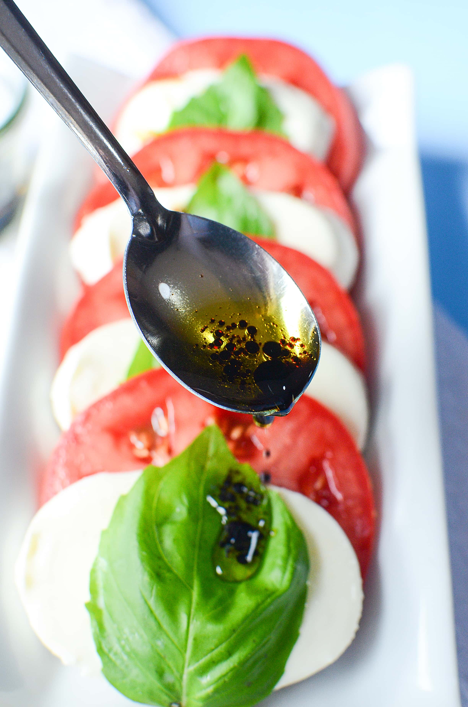

Recipe Ingredients
- 4 tomatoes
- Mozzarella cheese
- Fresh basil leaves
- Olive oil
- Balsamic glaze
- Salt and pepper
Recipe Steps
- Slice the tomatoes and fresh mozzarella into 1/4-inch thick slices.
- On a serving platter or individual plates, arrange the tomato and mozzarella slices, alternating them.
- Tuck fresh basil leaves between the tomato and mozzarella slices. You can use whole leaves or tear them into smaller pieces.
- Drizzle extra virgin olive oil over the tomato and mozzarella slices. Use as much or as little as you like.
- Season the salad with a pinch of salt and a few twists of freshly ground black pepper.
- Finish the Caprese Salad by drizzling a balsamic glaze over the top. The glaze adds a sweet and tangy flavor that pairs beautifully with the other ingredients.
Additional Food images

Spaghetti Carbonara
Origin: Italian Source: Own Recipe Category: Main Dish
My daughter learned to make these cookies at a baking camp at Zingermanns and has tweaked the recipe to fit the taste buds of her siblings. They are extremely sugary so the salt helps to balance it. Note, these cookies are best eaten very quickly.
Recipe Ingredients
- Spaghetti noodles
- 2 eggs
- Grated Pecorino Romano cheese
- spaghetti noodles
- Pancetta
- Garlic
- Black pepper
- Salt
Recipe Steps
- Add the pasta sauce and water to cover the bottom of the pan.
- Add the diced pancetta to the skillet and cook until it becomes crispy and golden brown.
- In a bowl, whisk together the eggs and grated Pecorino Romano cheese until well combined.
- Toss the pasta and pancetta together until well mixed and the pasta is coated with the rendered fat from the pancetta.
- Pour the egg and cheese mixture over the pasta and quickly toss everything together.
- Garnish the spaghetti carbonara with additional grated cheese and freshly chopped parsley if desired.
Additional Food images
Chinese Fried Rice
Origin: China Source: Family Recipe Category: Main Dish
My daughter learned to make these cookies at a baking camp at Zingermanns and has tweaked the recipe to fit the taste buds of her siblings. They are extremely sugary so the salt helps to balance it. Note, these cookies are best eaten very quickly.
Recipe Ingredients
- Cooked and cold jasmine rice
- Vegetable oil
- Minced garlic
- Diced carrots
- Frozen peas
- 2 eggs
- Cooked chicken, shrimp, or tofu
- Soy sauce
- Sesame oil
- Salt and pepper
- Green onions
- Sesame seeds
Recipe Steps
- Mince the garlic, dice the carrots, and have the frozen peas, diced protein, and beaten eggs ready.
- Heat the vegetable oil in a large skillet or wok over medium-high heat.
- Add the minced garlic to the hot oil and sauté for about 30 seconds until fragrant.
- Add the diced carrots and your choice of protein to the skillet, Stir-fry for 2-3 minutes until the protein is heated through and the carrots start to soften.
- Push the cooked ingredients to one side of the skillet, creating an empty space on the other side.
- Pour the beaten eggs into the empty side of the skillet. Allow the eggs to cook undisturbed for a moment, then scramble them with a spatula until they are mostly cooked but still slightly runny.
- Mix the scrambled eggs with the sautéed ingredients in the skillet.
- Stir to combine the rice with the other ingredients.
- Drizzle soy sauce over the rice mixture.
- Continue to cook and stir-fry for another 2-3 minutes to heat the rice through.
- Serve hot as a delicious and satisfying meal!
Additional Food images